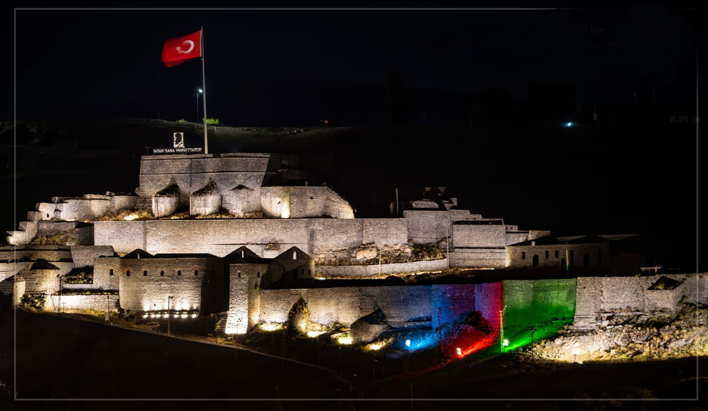
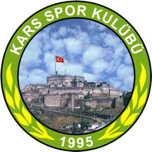

1881-1938, Minnetle...
1881-1938, Minnetle...

Kars Kalesi'nin Muhteşem Görüntüsü. |
Kars Kalesi, 1152 yılında yapılmıştır. |
|  |
Karsspor, Kars ilinde kurulan eski futbol ve boks şubeleri olan bir spor kulübüdür.
Aslen 1967 senesinde Kars Köy Hizmetlerispor ismiyle kurulan takım, 1995 yılında tüzük
değişikliği yaparak kendi tescilini Karsspor olarak yeniden adlandırma yaptığından dolayı
ambleminde 1995 yazmaktadır. Yeşil-beyazlı kulüp, yaptığı tüzük değişikliği sonrasında Karsspor
adını almıştır. 1995-96 sezonunda amatör kümeye düşen kulüp, 2004-2005 futbol sezonunda Türkiye
3. Profesyonel Futbol Ligi´ne yükselerek; yeniden profesyonel lig mücadelesine başlamıştır.
2007-2008 yılında da küme hattından çıkıp şampiyon oldu.
Karsspor, 2007-2008 sezonunda oynadığı 3. Lig'den, 4 Mayıs 2008 tarihinde oynadığı Aksarayspor
maçını kendi evinde 2-1 kazanarak 2. Lig'e yükselmiştir.
2010-2012 yılları arası 3. ligde mücadele etmiştir. 2011-12 sezonu sonunda Bölgesel Amatör Lig'e
düşmüştür. 1993-1997 yılları arasında Kars'ta görev alan ve Karsspor'da büyük emeği geçen Kars
Emniyet eski Müdürü Ali Gaffar Okkan'ın ismi takımın tesislerine verilmiştir. 2014-2015
sezonuna kadar Bölgesel Amatör Lig'de mücadele ettikten sonra Karsspor, Kars 1. Amatör Ligine
düştü. Sportif başarısızlık ve ödeyemediği borçlarından dolayı 2017-2018 sezonu öncesi liglerden
çekilerek futbol faaliyetlerini durdurmuştur. Günümüzde Kars'ı Bölgesel Amatör Lig'de Kars 36
Spor temsil etmektedir.
|